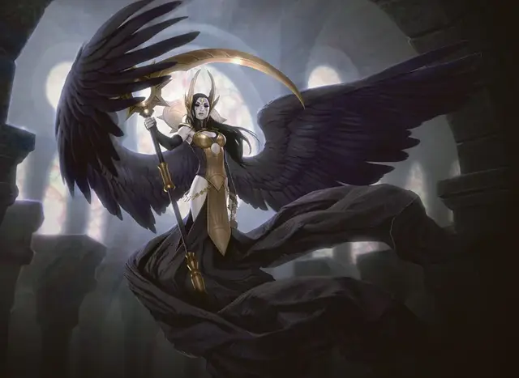

Ангел пакта смерти
Deathpact Angel
Средний Небожитель, законно-злой

Класс Доспеха 18 (природный доспех)
Хиты 175 (27к8 + 54)
Скорость 30 футов, летая 90 футов
| мод | спас | ||
|---|---|---|---|
| СИЛ | 16 | +3 | +3 |
| ЛОВ | 18 | +4 | +4 |
| ТЕЛ | 14 | +2 | +2 |
| мод | спас | ||
|---|---|---|---|
| ИНТ | 19 | +4 | +9 |
| МДР | 20 | +5 | +10 |
| ХАР | 23 | +6 | +11 |
Сопротивление урону излучение, некротическая энергия; дробящий, колющий, рубящий от немагических атак
Иммунитет к состояниям захват, истощение, очарование
Чувства истинное зрение 120 футов, пассивное Восприятие 20
Языки Все
Опасность 14 (11500 опыта)
Бонус мастерства +5
Особенности
Облёт. Ангел не провоцирует атаки, когда вылетает из досягаемости врага.
Сопротивление магии. Ангел совершает с преимуществом спасброски от заклинаний и прочих магических эффектов.
Врождённое колдовство. Базовой характеристикой Ангела является Харизма (Сл спасброска от заклинания 19, +11 к попаданию атакой заклинанием). Ангела может накладывать следующие заклинания, нуждаясь только в вербальных компонентах:
• Неограниченно: приказ [command] (как заклинание 2-го уровня), обнаружение зла и добра [detect evil and good]
• 3/день: очарование личности [charm person] (как заклинание 5-го уровня), тьма [darkness], внушение [suggestion]
• 1/день: оживление [raise dead]
Действия
Мультиатака. Ангел совершает две атаки своей косой. Он может заменить одну из этих атак на Цепи обязательств.
Коса. Рукопашная атака оружием: +9 к попаданию, досягаемость 10 фт., одна цель. Попадание: 9 (2к4 + 4) рубящего урона плюс 27 (6к8) урона некротической энергией.
Цепи обязательств. Ангел нацеливается на одно очарованное им существо, которое может видеть в пределах 90 футов от себя. Цель должна преуспеть в спасброске Харизмы Сл 19, иначе она станет парализованной на 1 минуту или до тех пор, пока не получит урона.
Бонусные действия
Эксплуатация должников. Бонусным действием ангел нацеливается на очарованное им существо, которое он может видеть в пределах 30 футов от себя. Ангел наносит цели 11 (2к10) урона некротической энергией и получает временные хиты, равные нанесённому урону.
Описание
Ангелы орзовов
Немногие ангелы находят что-либо привлекательным в коррупции и упадке, воплощенными Синдикатом Орзовов, поскольку такое общество в корне противоположно их природе, но разочарование может соблазнить даже бессмертных существ. Когда цинизм укореняется в сердце ангела, когда вопросы подрывают преданность делу справедливости, когда сила становится инструментом господства над слабыми, Синдикат Орзовов приветствует ангела с распростертыми объятиями, предлагая статус, уважение и власть.
Орзовские ангелы могут претендовать на должности палачей, командиров или влиятельных лиц, но чаще всего они занимают свое собственное место в гильдии, стоя в стороне от жесткой иерархии Орзовов.
Ангел пакта смерти
Ангел пакта смерти обитают в величайшем из орзовских соборов, где они окружают себя богатством и жалкими вассалами, которые полностью в их рабстве.
Дары приносящие. Выдавая себя за благодетельного бога, ангел пакта привлекает просителей, которые просят ангела о благословениях: богатстве, престиже, здоровье, мести и тому подобном. Изображая себя щедрым и милосердным, ангел обычно пытается предоставить просителям то, что они ищут, используя свои способности, черпая из своих богатств или вымогая милости у других членов гильдии. Однако, верный духу Орзовов, ангел дарит эти дары не из доброты, а ради обретения фанатичных последователей, которые пожизненно в долгу перед ним.
Долг и договор. Те, кто получают благосклонность ангела пакта смерти, берут на себя долг, который они несут с пылкой преданностью. Они регулярно приносят ангелу безделушки и подношения, уже не прося и не ожидая ничего взамен, и даже охотно отдают свои смертные жизни за своего ангельского покровителя. Даже после смерти эти должники продолжают служить ангелу и Орзовскому синдикату как связанные договором духи.
Оплата долга
Ангел пакта смерти может сделать связанному договором духу предложение, которое позволит духу отплатить его долг: если ангел когда-либо умрёт, дух, с которым заключён контракт, может пожертвовать своей не-жизнью, чтобы вернуть к жизни ангела. Увидев, как хиты ангела опускаются до 0, связаный договором дух может уничтожить себя, его долг гаснет по мере того, как он рассеивается, после чего ангел возвращается к жизни с 1 хитом.